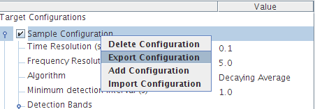
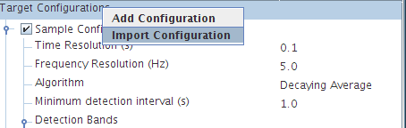

Export Configuration menu option. You will be prompted to select
an output directory and to enter a file name for the target configuration file.
The output file will be supplied with the extension TCF.
|  |
Target Configuration
node of the configuration tree and selecting the Import Configuration
menu option.
|  |
TCF extension.
|
|
| Next: Removing a Likelihood Detection Module |
| Previous: Configuring the Likelihood Detector |